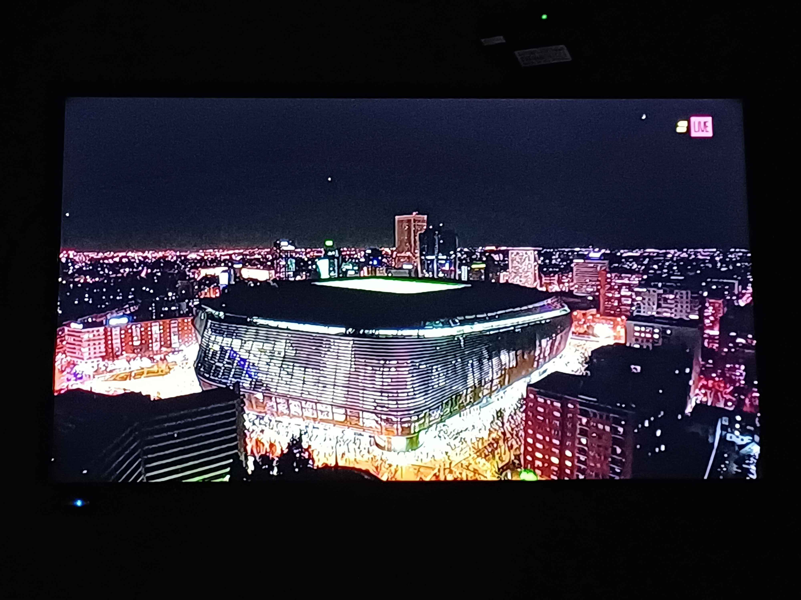

Description for 20250209_005307.jpg
Here's a detailed description of the image:
Overall Impression: The image appears to be a photograph of a television screen displaying an aerial view of a modern stadium at night, surrounded by a sprawling cityscape. The lighting is dramatic, with the stadium brightly illuminated against the backdrop of the dark night sky and the glow of the city.
Key Elements:
• Stadium: The stadium is the central focal point of the image. It appears to be a large, modern structure with a distinctive, perhaps retractable, roof. The stadium's exterior is lit up with what seems to be neon or LED lights, creating a visually striking effect.
• Cityscape: Surrounding the stadium is a dense cityscape with numerous buildings and streetlights. The lights of the city create a warm glow that contrasts with the darkness of the sky. The skyline includes several taller buildings and skyscrapers.
• Lighting: The lighting is a crucial aspect of the image. The stadium is brilliantly illuminated, drawing the eye to its architectural details. The city lights contribute to the overall ambiance, creating a sense of depth and vibrancy.
• Night Sky: Above the city, the night sky is a dark, deep blue.
• Live: In the upper right corner of the screen, a "Live" indicator is visible.
Composition and Perspective:
• The image is taken from an elevated viewpoint, providing an expansive view of the stadium and its surroundings.
• The composition emphasizes the scale of the stadium in relation to the cityscape.
• The lighting and perspective create a sense of depth and dimension.
Overall Impression: The image captures the dynamic and visually stunning contrast between the modern stadium and the surrounding city at night. The bright lights of the stadium and cityscape create a dramatic and captivating effect. The "Live" indicator suggests that it's a snapshot of a live broadcast.
